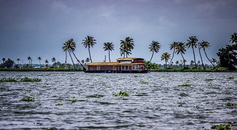
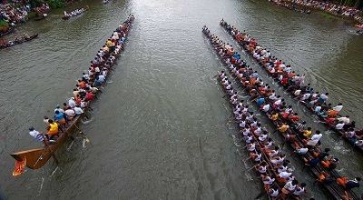

Alleppey backwaters
The Alleppey backwaters was earlier used as a mode of transportation, fishing and agriculture and have evolved over time as a tourism hotspot. The main attraction of the Alleppey backwaters is the overnight journey in the famous Kerala houseboats. These houseboats are as comfortable as any hotel room - sometimes even more luxurious, and as a bonus, you get the open deck.
Sunset viewing, bird watching, village visits, stargazing, witnessing the everyday life of the farmers and fishermen along with visiting the various regions that specialise in the manufacture of certain products like toddy, coir, handicrafts - Alleppey is a handful of an experience to have.
Alleppey is rightfully called the Venice of the East. With its labyrinth of brackish lagoons and interconnected lakes, Alleppey or Alappuzha is no less than the famous European city - neither in beauty nor in history and culture. Hire your boat and get started along the flow of the stream to soak in its beauty.

Nehru Trophy Boat Race
One of the most exciting events to be held in Lake in Alleppey is the Nehru Trophy Boat Race, which is a yearly competitive boating event held on the second Saturday of every August, during the Onam festival. The most popular event is the Snake Boat Race, which is a thrilling event to watch as well as participate in. 100-120 feet long canoe-like boats make serpentine movements through the water, thereby popularising the name.
Other categories of boats which participate in various events of the race are Churulan Vallam, Iruttukuthy Vallam, Odi Vallam, Veppu Vallam (Vaipu Vallam), Vadakkanody Vallam and Kochu Vallam.
History
Supposedly when Prime Minister Jawaharlal Nehru came to see the event, he got so involved in the competition that he jumped in one of the boats which later won the race. Since then, the event has been called Nehru Trophy Snake Boat race. The men rowing the boats and cheerleaders motivating them is a sight to witness. The winners get a trophy in the form of a silver snake boat on a wooden pedestal.